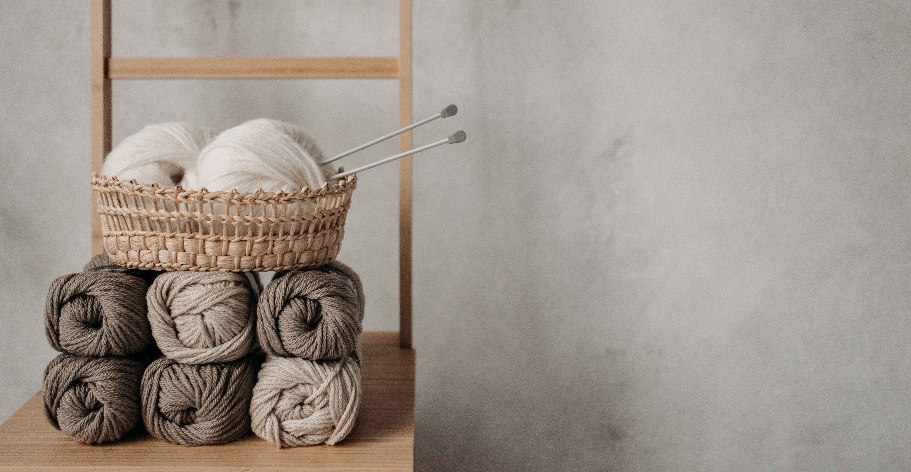

Local, handmade yarns
A monthly subscription box for sustainably created yarns, supporting local producers.

About our products.

We provide a variety of dyed and undyed yarns each month

Our yarns are treated to minimise itchiness

Receive a free pair of needles in your first month

At least one high-quality textured yarn each month
Subscribing to Spinning Yarns was the best choice I made this year. The yarns are strong, supple, and full-bodied - exactly as they should be.
-Joe Bloggs, happy customer
Register today!
We have a limited number of slots for this month available. Sign up before it's too late!